|


|
Langkawi
» exacte locatie
 Langkawi is de eerste en meteen ook laatste plek in Maleisie waar we weer eens goed konden ankeren, zwemmen en naar het strand. Na de zwembandjestraining, die we Siebe in het zwembad hadden gegeven, kon hij zich goed redden in de zee. Hij had veel plezier met het zand, de zandtorentjes en het water. Langkawi is ook een belastingvrij eiland en we hebben meteen 400 liter diesel, vijf trays bierblikjes en twee sloffen sigaretten (voor vissers, piraten en ambtenaren) ingeslagen.
Langkawi is de eerste en meteen ook laatste plek in Maleisie waar we weer eens goed konden ankeren, zwemmen en naar het strand. Na de zwembandjestraining, die we Siebe in het zwembad hadden gegeven, kon hij zich goed redden in de zee. Hij had veel plezier met het zand, de zandtorentjes en het water. Langkawi is ook een belastingvrij eiland en we hebben meteen 400 liter diesel, vijf trays bierblikjes en twee sloffen sigaretten (voor vissers, piraten en ambtenaren) ingeslagen.
Het piratenvraagstuk is voor ons nog steeds niet opgelost. Behalve dan dat ze meestal geen genoegen zullen nemen met alleen een pakje sigaretten. In Langkawi hebben we met verschillende mensen gesproken die in 2008 en 2009 door de Golf van Aden zijn gekomen. Ook hebben we een stel ontmoet dat vorig jaar door Somalische piraten gegijzeld is gehouden in de bergen. Hierdoor hebben we een preciezer beeld gekregen van de situatie, maar het helpt niet echt bij het maken van een beslissing. Op dit moment komen de eerste boten van dit seizoen deze kant op door de Golf van Aden. We zullen zien hoe het deze verkenners vergaat. Wij hebben in ieder geval nog tot begin januari de tijd om te twijfelen. Overigens schijnt het ook mogelijk te zijn om particuliere bewaking in de vorm van een boot met zwaarbewapende Israeliers in te huren. Alleen is het voor de prijs van 10000 dollar per dag niet echt goedkoop te noemen.
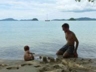
|
|
|

Penang
» exacte locatie
Eigenlijk al sinds ons vertrek uit Nederland meer dan drie jaar
geleden hebben we altijd in meer of mindere mate het gevoel gehad op
te moeten schieten. Om verschillende redenen bleven we altijd in de
achterhoede varen. Maar sinds we in Maleisie zijn is dat anders. We
hebben bewust minder stops in Indonesie gemaakt waardoor we nu ineens
in de kopgroep terecht zijn gekomen. Dat bevalt erg goed. De extra
speelruimte in de planning geeft ons de vrijheid om ergens eens wat
langer te blijven als het bevalt.
De afgelopen twee weken hebben we van deze vrijheid gebruik gemaakt om
niet veel te doen. Eerst hebben we een week afgemeerd gelegen bij een
luxe resort in Port Dickson waar we dagelijks met Siebe het zwembad in
zijn gegaan. Toen het weer er goed uit zag, beter dan op de foto,
hebben we een tweedaagse tocht gemaakt naar Georgetown op het eiland
Penang. Georgetown is een leuke stad om doorheen te lopen. Overal zijn
kleine winkeltjes waarvan de meeste er erg authentiek uitzien. Het
totaal tegenovergestelde van een modern winkelcentrum vol winkels die
overal hetzelfde zijn. Door de stad heen verspreid staan vele tempels,
van het formaat huis tot aan een hal met daarin een enorm liggend
boeddha-beeld.
In Maleisie wonen drie grote bevolkingsgroepen samen: moslims,
Chinezen en Indiers. Er zijn dan ook restaurants in drie types. We
hadden al regelmatig bij de moslims en Chinezen gegeten, maar in
Penang hebben we het Indiaas eten ontdekt. Heel smakelijk. Uiteraard
nog steeds allemaal voor prijzen waar je zelf niet voor kunt koken.
Siebe eet ook een beetje mee. Hij vindt Naan-brood erg lekker en
stukjes kip gaan er ook goed in. Interessant is ook dat al het
varkensvlees in de supermarkt is geisoleerd in een 'non-halal' hoekje.
De cassiere waar wij afrekende was denk ik zelf moslim, want hij
durfde mijn halve kilo bacon niet aan te raken. Hij deed zijn handen
eerst in een plastic zak, pakte toen het pak bacon op, keerde de zak
er omheen en schoof het met een vies gezicht van zich af.
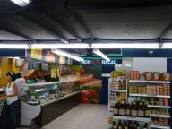
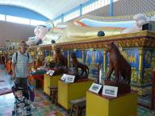
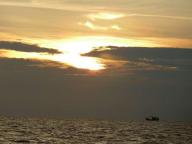
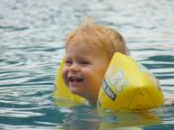
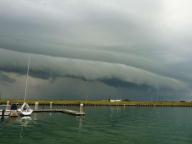
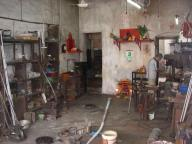
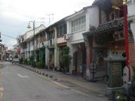
|
|
|
Gastenboek werkt weer!
» exacte locatie
Het gastenboek werkt weer! Dus voor iedereen die tevergeefs iets heeft
proberen te plaatsen: het kan nu weer! We vinden reacties altijd erg
leuk!
|
|
|
Malacca
» exacte locatie
In de veertiende eeuw vluchtte een verbannen Sumatraanse sultan naar
Maleisie. Hij zocht een goede plek om handel over zee te drijven. Op
een dag was hij aan het rusten onder een boom toen een van zijn honden
een soort hertje aanviel. Uit zelfbescherming wist het hertje de hond
in de rivier te duwen. De sultan was zo onder de indruk van het
dappere hertje dat hij besloot dat hij hier een stad wilde stichten.
Hij noemde de stad Malacca, naar de boom waaronder hij zat.
In de 21-ste eeuw vaart de Hafskip dit stadje vol geschiedenis binnen.
Er liggen wat grote jongens voor anker maar Malacca is niet meer de
drukke handelsplaats die het ooit was. Wij hoeven ons anker niet uit
te gooien maar meren af in de haven die nog niet helemaal klaar is.
Vanaf daar is het een stukje lopen naar het oude stadje. Nadat het een
tijdje van de portugezen is geweest kwam Malacca in de handen van de
Nederlanders. 150 Jaar zijn ze er geweest en hebben hun sporen achter
gelaten. In het museum zagen we een maquette waar de Nederlanders een
vestigingsstad met water er om heen van Malacca hadden gemaakt. Het
portugeese kerkje hebben ze vernederlandst en het 'stadthuys' staat er
nog. Speciaal voor de toeristen heeft men nu een molentje neergezet.
We liepen net langs een gids die over de molen vertelde "This is a
sign of the Dutch yes". Dat heeft vast indruk gemaakt ;-). In de haven
ligt de eigenaar van 'The Dutch Harbour Cafe', een Engelsman met
Nederlandse vrienden. Daar eten we heerlijke kroketten met friet van
echte Hollandse aardappels.
We hebben het erg naar ons zin in Malacca. We vinden het leuk dat er
wat toeristen rondlopen. Als je de enige toerist bent voelen we ons
een bezienswaardigheid en we vallen ook meteen zo op met onze blanke
huid. En Siebe helemaal natuurlijk. Ze willen allemaal met hem op de
foto. Hier valt dat gelukkig mee. Elke dag lopen we even het stadje
in, bekijken of eten wat om te eindigen in het heerlijke koele
winkelcentrum. Ik ben met Mirjam wezen shoppen. Voor het eerst zonder
Siebe. En 's avonds zijn Joost en Frank biertjes in de stad gaan
drinken en waren lekker laat weer terug. Siebe heeft weer een nieuwe
truc, hij kan z'n tong uitsteken!
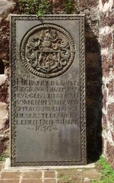
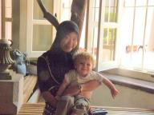
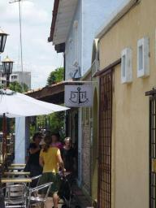
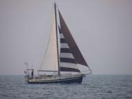
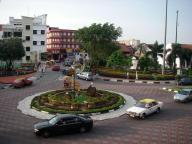
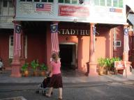
|
|
|
ABC Supreme
» exacte locatie
We zijn net aangekomen in Melaka. In drie dagtochten met de stroom mee
zijn we hier heen gevaren tegelijk met de boot Noorderzon. Veel
dreigende luchten en 's nachts veel geflits in de lucht als we voor
anker lagen. Maar verder niks aan de hand. Alhoewel, wel een heleboel
visnetten waar we voor moesten uitwijken. Een heleboel witte balletjes
op een rij en aan de ene kant als je geluk hebt een visbootje en aan
de andere kant een boeitje met een vlag erop. En alles zo laag dat je
ze pas op het laatste moment ziet.
In Danga Bay, waar we in een gratis marina lagen, hebben we het erg
naar ons zin gehad. Veel op pad geweest om dingen te kopen zoals
bijvoorbeeld een nieuw scheerapparaat omdat daar de bladen zo verroest
van waren dat het bijna een half uur duurde voordat Joost klaar was.
We zijn er speciaal voor naar Singapore gegaan. Alle apparaten
gevonden die we nodig hadden. Terwijl ik op zoek was naar een rok
vermaakte Joost zich uitstekend in de Sim Lim tower, een winkelcentrum
vol met electronica onderdelen zoals diodes en ledjes. De buren van de
ouders van Joost wonen voor twee jaar in Singapore en die hebben we
bezocht, dat was erg gezellig. Ze hebben ons meegenomen naar de
Hollandsche club, compleet met kroket, kloonfrikandel en mayonaise.
Een heel ander culinair hoogstandje hebben we, samen met Frank, Mirjam
en Menno van de Noorderzon, in een restaurantje in Danga Bay gehad.
Het toetje 'ABC supreme'. Schijnbaar heel populair onder de
Maleisiers maar wij hadden geen idee wat het was. Volgens de
serveerster fruit met ijs. Klinkt goed, dus doe maar. Het bleek een
allegaartje van zoet rose brood?, lyches, een soort bonen, mais en
andere rare sliertjes wat ik niet naar fruit vond smaken. Het leek
meer alsof ze de kliekjes van de dag er voor in een mooi kom hadden
gedaan met een bolletje ijs er op. Om de ervaring compleet te maken
had Joost maisijs gekozen. Ik heb voor het eerst in m'n leven m'n
toetje niet opgegeten maar Joost vond het 'best lekker'.
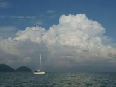
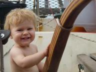
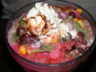
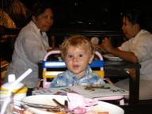
|
|
|
Danga Bay
» exacte locatie
Na een dagje in het zwembad van de jachthaven zijn we 's ochtends om
6.00 uur begonnen aan de oversteek via Singapore naar Maleisie. De
tocht loopt door een qua scheepvaart heel druk gebied, want de
zeestraat ten zuiden van Singapore verbindt de Indische Oceaan met het
Verre Oosten. Meestal konden we wel aan de kant blijven varen en
hadden we niet al te veel last van al die schepen, maar ergens moesten
we toch de doorgaande route oversteken. De oversteek duurt met onze
boot ongeveer twintig minuten en met schepen die vijf keer zo snel als
ons varen is het behoorlijk lastig om te bepalen wat een goed moment
is om te gaan. Gelukkig had ik mijn nieuwe gadget werkend gekregen:
AIS. Dat is een systeem waarmee alle schepen inclusief richting en
snelheid op de computer getoond kunnen worden. Toen er op het scherm
een mooi gat verscheen zijn we gegaan. Interessant was dat het er
buiten helemaal niet zo gunstig uit zag, maar al varende bleek AIS
toch gelijk te hebben en gingen we mooi overal zoals gepland voor en
achterlangs. Overigens is al dat elektronisch geweld niet per se
noodzakelijk, want terwijl we aan het oversteken waren dobberde er ook
een man in een kano die daar rustig aan het vissen was.
's Middags kwamen we aan in de jachthaven van Danga Bay in Maleisie.
De reden dat we hier heen zijn gegaan is dat deze jachthaven in
aanbouw is en tot dat dat gereed is hoeft er geen liggeld betaald te
worden! Verder kunnen we vanaf hier makkelijk een dagje naar Singapore
en het scheelt weer gedoe om met de boot in en uit Signapore te komen.
De Noorderzon lag er al een paar dagen en had voor ons een plekje
geregeld bij de havenmeester. Dat was mooi, want het is gratis en dus
ook erg populair. In ruil daarvoor hadden wij voor hun twee trays
Bintang bier uit Indonesie meegesmokkeld, want bier is in Maleisie
heel erg duur.
De eerste twee dagen hier zijn erg goed bevallen. Het is ook best
gezellig zo met al die boten aan de steiger. Er worden zelfs
activiteiten georganiseerd door de langliggers hier. Een van de
activiteiten was een bezoek aan het open huis van een moslimfamilie.
De ramadan is weer afgelopen en ter gelegenheid daarvan organiseren de
moslims open huizen waar iedereen langs mag komen en eten krijgt. Om
een reden die ons nog steeds niet helemaal duidelijk is werden alle
zeilers in de haven hier ook voor uitgenodigd. Het scheen iets te
maken te hebben met de baas van de haven die een vriend was van een
parlementslid die weer rijke vriendjes had. Maar goed, gratis eten,
dat slaan we niet af. Uiteindelijk stonden we daar met een groepje van
zes zeilers in een tuin vol moslims en hoofddoekjes. We werden
hartelijk welkom geheten door de gastheer en daarna helemaal
volgepropt met eten dat verrukkelijk smaakte. Siebe was weer erg
populair en ze wilden hem allemaal vasthouden en zich laten
fotograferen met hem. Alsof het allemaal nog niet genoeg was kregen we
toen we weggingen ook nog een envelop met een klein geldbedrag. Een
beetje een maf uitstapje, maar goed, zij blij, wij blij, dus geen
probleem.
Vandaag zijn we naar het winkelcentrum geweest. Wat een feest was dat.
Alles is hier namelijk erg modern en makkelijk, maar de prijzen zijn
nog steeds op het niveau van Indonesie. Dat vermoeiende afdingen hoeft
hier niet en iedereen spreekt min of meer Engels. Het eten smaakt erg
goed, alhoewel het soms een beetje aan de pittige kant is. Iedereen
houdt schijnbaar van eten, want overal wordt van alles bereid. Verder
is de moslimcultuur hier meer aanwezig. In Indonesie zag je een enkel
hoofddoekje, maar hier is het allemaal wat serieuzer. Wat ook
interessant is zijn de vele winkels vol met illegale dvd's voor 80
eurocent per stuk. Geen enkel probleem hier. Wat alleen jammer is is
dat we gewaarschuwd werden Siebe in de buggy goed in de gaten te
houden, want er schijnen baby's gestolen te worden. Brrr....
We blijven hier nog wel eventjes liggen. Er zijn weer wat
bootprobleempjes opgedoemd die opgelost moeten worden en het is hier
gezellig.
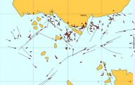
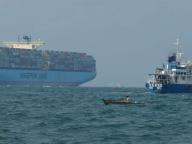
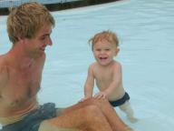
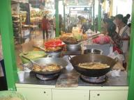
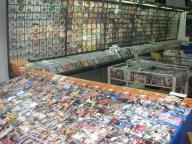
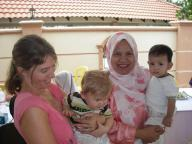
|
|
|

|

|
|
|